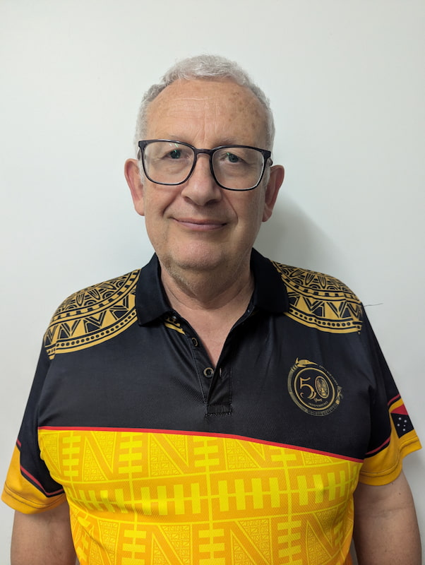

Colin John Cowdrey | WDD 130.
I was born in England and immigrated to Australia with my parents when I was 6 years old. I am now serving as a full time senior missionary working in the Learning Centre in Lae in Papua New Guinea.
I was born in England and immigrated to Australia with my parents when I was 6 years old. I am now serving as a full time senior missionary working in the Learning Centre in Lae in Papua New Guinea.